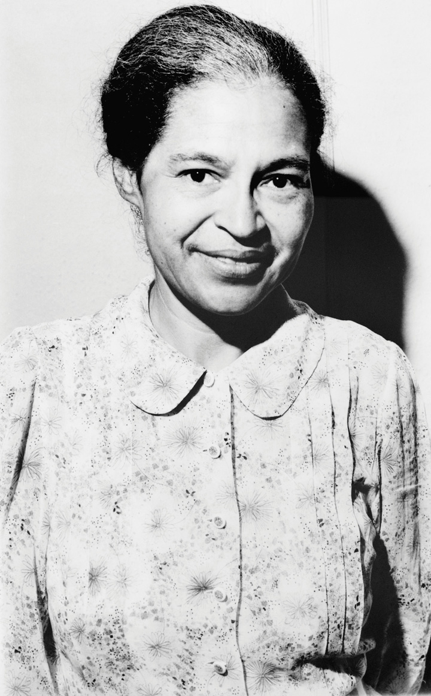
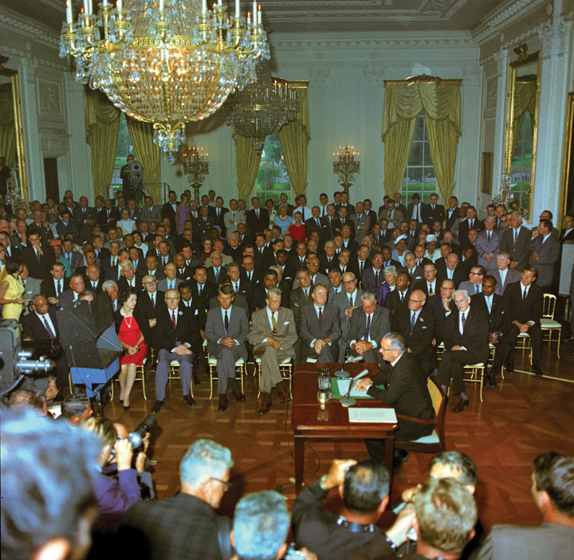

After reading this section, you should be able to answer the following questions:
Equality did not enter the Constitution until the Civil War AmendmentsThe three amendments added to the Constitution (Thirteenth, Fourteenth, and Fifteenth) after the Civil War to establish the legal status and rights of the newly freed slaves. (the Thirteenth, Fourteenth, and Fifteenth) set forth the status and rights of former slaves.
In early 1865, with the Union’s triumph in the Civil War assured, Congress passed the Thirteenth Amendment. Quickly ratified by victorious Union states, it outlawed slavery and “involuntary servitude.” It authorized Congress to pass laws enforcing the amendment—giving it the power to eradicate not simply slavery but all “badges of servitude.”Herman Belz, A New Birth of Freedom: The Republican Party and Freedmen’s Rights, 1861–1866, 2nd ed. (New York: Fordham University Press, 2000), chap. 7.
Abraham Lincoln, assassinated in 1865, was succeeded as president by Andrew Johnson, who pushed for a quick reunion of North and South. Republicans in Congress feared that the rights of newly freed slaves would be denied by a return to the old order. Distrusting Johnson, they decided protections had to be put into the Constitution. Congress enacted the Fourteenth Amendment in 1868 and made its ratification a condition for the Southern states’ reentry into the Union.
The Fourteenth Amendment contains three key clauses. First, anyone born in the United States is a US citizen, and anyone residing in a state is a citizen of that state. So it affirmed African Americans as US and state citizens.
Second, the amendment bars states from depriving anyone, whether a citizen or not, of “life, liberty, or property, without due process of law.” It thereby extended the Bill of Rights’ due process requirement on the federal government to the states.
Third, the amendment holds that a state may not “deny to any person within its jurisdiction the equal protection of the laws.” This equal protection clauseThe section of the Fourteenth Amendment to the Constitution that requires states to ensure “equal protection of the laws” to all individuals. is the Supreme Court’s major instrument for scrutinizing state regulations. It is at the heart of all civil rights. Though the clause was designed to restrict states, the Supreme Court has ruled that it applies to the federal government, too.Bolling v. Sharpe, 347 US 497 (1954). See also Adarand Constructors v. Peña, 515 US 200 (1995).
The Fifteenth Amendment, ratified in 1870, bars federal and state governments from infringing on a citizen’s right to vote “on account of race, color, or previous condition of servitude.”
The Bill of Rights limited the powers of the federal government; the Civil War Amendments expanded them. These amendments created new powers for Congress and the states to support equality. They recognized for the first time a right to vote.
Political debate and conflict surround how, where, and when civil rights protections are applied. The complex US political system provides opportunities for disadvantaged groups to claim and obtain their civil rights. At the same time, the many divisions built into the Constitution by the separation of powers and federalism can be used to frustrate the achievement of civil rights.
The status of African Americans continued to be a central issue of American politics after the Civil War.
The federal government retreated from the Civil War Amendments that protected the civil rights of African Americans. Most African Americans resided in the South, where almost all were disenfranchised and segregated by the end of the nineteenth century by Jim Crow laws that enforced segregation of public schools, accommodation, transportation, and other public places.
Jim Crow Laws
“Jim Crow” was a derogatory term for African Americans, named after “Jump Jim Crow,” a parody of their singing and dancing as performed by a white actor in blackface.
Learn more about Jim Crow laws at http://www.pbs.org/wnet/jimcrow.
Enforcing the Fifteenth Amendment’s right to vote proved difficult and costly. Blacks voted in large numbers but faced violence from whites. Vigilante executions of blacks by mobs for alleged or imagined crimes reached new highs. In 1892 alone, 161 lynchings were documented, and many more surely occurred.
In 1894, Democrats took charge of the White House and both houses of Congress for the first time since the Civil War. They repealed all federal oversight of elections and delegated enforcement to the states.William Gillette, Retreat from Reconstruction, 1869–1879 (Baton Rouge: Louisiana State University Press, 1979), chap. 2. Data on lynching are in Robert L. Zangrando, The NAACP’s Crusade Against Lynching, 1909–1950 (Philadelphia: Temple University Press, 1980), table 2. Southern states quickly restricted African American voting. They required potential voters to take a literacy test or to interpret a section of the Constitution. Whites who failed an often easier test might still qualify to vote by virtue of a “grandfather clause,” which allowed those whose grandfathers had voted before the Civil War to register.
The Supreme Court also reduced the scope of the Civil War Amendments by nullifying federal laws banning discrimination. The Court ruled that the Fourteenth Amendment did not empower the federal government to act against private persons.
De jure segregationSeparation of the races by law and public policies.—the separation of races by the law—received the Supreme Court’s blessing in the 1896 case of Plessy v. Ferguson. A Louisiana law barred whites and blacks from sitting together on trains. A Louisiana equal rights group, seeking to challenge the law, recruited a light-skinned African American, Homer Plessy, to board a train car reserved for whites. Plessy was arrested. His lawyers claimed the law denied him equal protection. By a vote of 8–1, the justices ruled against Plessy, stating that these accommodations were acceptable because they were “separate but equalThe doctrine, endorsed by the Supreme Court in Plessy v. Ferguson (1896) and repudiated by Brown v. Board of Education (1954), that racial segregation was constitutional as long as all races were treated equally..” Racial segregation did not violate equal protection, provided both races were treated equally.Plessy v. Ferguson, 163 US 537 (1896)
Plessy v. Ferguson gave states the green light to segregate on the basis of race. “Separate but equal” was far from equal in practice. Whites rarely sought access to areas reserved for blacks, which were of inferior quality. Such segregation extended to all areas of social life, including entertainment media. Films with all-black or all-white casts were shot for separate movie houses for blacks and whites.
At the dawn of the twentieth century, African Americans, segregated by race and disenfranchised by law and violence, debated how to improve their lot. One approach accepted segregation and pursued self-help, vocational education, and individual economic advancement. Its spokesman, Booker T. Washington, head of Alabama’s Tuskegee Institute, wrote the best-selling memoir Up from Slavery (1901) and worked to build institutions for African Americans, such as colleges for blacks only. Sociologist W. E. B. Du Bois replied to Washington with his book The Soul of Black Folk (1903), which argued that blacks should protest and agitate for the vote and for civil rights.
Du Bois’s writings gained the attention of white and black Northern reformers who founded the National Association for the Advancement of Colored People (NAACP) in 1909. Du Bois served as director of publicity and research, investigating inequities, generating news, and going on speaking tours.Charles Flint Kellogg, NAACP: A History of the National Association for the Advancement of Colored People, vol. 1 (Baltimore: Johns Hopkins University Press, 1967).
The NAACP brought test cases to court that challenged segregationist practices. Its greatest successes came starting in the 1930s, in a legal strategy led by Thurgood Marshall, who would later be appointed to the Supreme Court. Marshall urged the courts to nullify programs that provided substandard facilities for blacks on the grounds that they were a violation of “separate but equal.” In a key 1937 victory, the Supreme Court ruled that, by providing a state law school for whites without doing the same for blacks, Missouri was denying equal protection.Missouri ex rel. Gaines v. Canada, 305 US 676 (1937). See Mark V. Tushnet, The NAACP’s Legal Strategy Against Segregated Education, 1925–1950 (Chapel Hill: University of North Carolina Press, 1987), chaps. 2–5. Such triumphs did not threaten segregation but made Southern states take “separate but equal” more seriously, sometimes forcing them to give funds for black colleges, which became centers for political action.Doug McAdam, Political Process and the Development of Black Insurgency, 1930–1970, 2nd ed. (Chicago: University of Chicago Press, 1999), 100–103.
During World War I, Northern factories recruited rural Southern black men for work, starting a “Great Migration” northward that peaked in the 1960s. In Northern cities, African Americans voted freely, had fewer restrictions on their civil rights, organized themselves effectively, and participated in politics. They began to elect black members of Congress, and built prosperous black newspapers. When the United States entered World War II, many African Americans were brought into the defense industries and the armed forces. Black soldiers who returned from fighting for their country engaged in more militant politics.
President Harry S. Truman saw black citizens as a sizable voting bloc. In 1946, he named an advisory commission to recommend civil rights policies. Amid his 1948 election campaign, Truman issued executive orders that adopted two of its suggestions: desegregating the armed forces and creating review boards in each cabinet department to monitor discrimination. With the crucial help of Northern black votes, Truman won in an upset.
In the 1940s, Supreme Court decisions on lawsuits brought by the NAACP and argued by Thurgood Marshall chipped away at “separate but equal.” In 1941, Arthur Mitchell, a black member of Congress from Chicago, was kicked out of a first-class sleeping car when his train entered Arkansas. The Court ruled that the Arkansas law enforcing segregation was unconstitutional. In 1944, the Court ruled that the Fifteenth Amendment barred Texas from running an all-white primary election. In 1948, it stopped enforcement of covenants that home buyers signed that said they would not resell their houses to blacks or Jews.Mitchell v. United States, 313 US 80 (1941); Smith v. Allwright, 321 US 649 (1944); Shelley v. Kraemer, 334 US 1 (1948).
Marshall decided to force the justices to address the issue of segregation directly. He brought suit against school facilities for blacks that were physically equal to those for whites. With the 1954 decision, Brown v. Board of Education, the Supreme Court overturned Plessy v. Ferguson and ruled unanimously that racial segregation in public education violated the Constitution.Brown v. Board of Education, 347 US 483 (1954). (See Note 15.23 "Comparing Content" in Chapter 15 "The Courts".)
Only 6 percent of Southern schools had begun to desegregate by the end of the 1950s. In 1957, Arkansas Governor Orval Faubus, backed by white mobs, mobilized the National Guard to fight a federal court order to desegregate Little Rock’s public schools. President Eisenhower took charge of the Arkansas National Guard and called up US troops to enforce the order.Harvard Sitkoff, The Struggle for Black Equality, 1954–1992, rev. ed. (New York: Hill and Wang, 1993), chap. 2. Television images of the nine Little Rock students attempting to enter Central High surrounded by troops and an angry mob brought the struggle for civil rights into American living rooms.
Central High Conflicts
Learn more about the conflicts at Central High online at http://www.nps.gov/nr/travel/civilrights/ak1.htm.
Even before the Brown v. Board of Education decision, a mass movement of African Americans had emerged from black churches and black colleges. Such organizations provided networks for communicating with and organizing recruits. The black press in both the North and the South publicized the movement.
Daily newspapers in the South, which covered a white power structure and were aimed at white readers, all but ignored the African American civil rights movement. Southern reporters who covered the movement were threatened, and even harmed physically, by the Ku Klux Klan, a white supremacist group.Gene Roberts and Hank Klibanoff, The Race Beat. (New York: Random House, 2006). Northern newspapers were slow to discover the movement, although the attention they eventually accorded civil rights protests would help the movement grow and expand.
The first mass action for civil rights took place in Baton Rouge, Louisiana, in 1953. African Americans led by a Baptist minister boycotted the city’s segregated public buses. Although African Americans provided about three-quarters of the ridership, they had to stand behind an often near-empty white section. A deal was struck: the city council saved the first two rows for whites but blacks could sit anywhere else, as long as they were not in front of whites.
Figure 5.1
NAACP leaders sued the city and started a boycott led by a twenty-six-year-old Baptist preacher fresh out of divinity school—Martin Luther King Jr. The boycott lasted 381 days and ended only after the US Supreme Court had declared Montgomery’s segregated public transportation unconstitutional.
Another bus boycott took place in Montgomery, Alabama. Rosa Parks, a seamstress and an activist in the local NAACP, was arrested in December 1955 after refusing to give up her bus seat to a white man.
Rosa Parks
Two enduring images of the African American civil rights movement are of Rosa Parks. In one, she is being arrested. In a later photograph taken for Look magazine, she is sitting on a city bus in front of a white passenger. Her refusal to give up her bus seat to a white person and move to the back of the bus touched off the massive Montgomery bus boycott that ended with a Supreme Court decision ordering the city to desegregate public transportation. The images endure because of the simple, moving tale of a lone individual affirming her dignity and equality by a simple act—sitting down.
What the images do not show is that Parks was a longstanding activist in local civil rights politics and was secretary of the Montgomery chapter of the NAACP. The photo of her arrest was not for her action on the bus, but for later activity in the boycott.
Parks was not the first African American woman to refuse to give up her seat in a bus. Claudette Colvin, a fifteen-year-old young woman active in the NAACP Youth Council, had refused to give up her bus seat a few months before. Colvin cried out as she was arrested, “this is my constitutional right.” NAACP leaders had hoped to draw attention to Colvin’s case, until they realized that she was foul-mouthed and unruly—the pregnant, unmarried Colvin was not the symbol of African American resistance the NAACP wished to portray. Parks, a diminutive, devout, soft-spoken, married woman, was ideal for favorable publicity.Douglas Brinkley, Rosa Parks (New York: Viking Penguin, 2000), chap. 5.
Civil rights activists receive most positive coverage when they are able to present themselves as noble, oppressed victims. The images of Parks, arrested and sitting at the front of the bus, have lasted and been widely reproduced. Other images of Parks as political activist and organizer, roles that are equally central to her life, have not.
King founded the Southern Christian Leadership Conference (SCLC) to lead black resistance, confirmed himself as the leading orator of the movement, and honed a strategy by which black victims of discrimination confronted repressive white power nonviolently. Rosa Parks’s example revealed how this “David-and-Goliath” story was well suited to getting the issue of civil rights into the news.
Students created the next wave of activism. In 1960, four freshmen at North Carolina A&T State University sat down at a dime-store, whites-only lunch counter in Greensboro and would not leave until they were served.
The students tipped off a local white photographer, who took a picture of them that gained national attention. The “Greensboro four” were arrested and jailed. Twenty-nine students sat at the lunch counter the next day, and hundreds more followed. After months of dwindling sales, Greensboro’s merchants agreed to desegregate. The sit-in was rapidly imitated across the South.William H. Chafe, Civilities and Civil Rights: Greensboro, North Carolina, and the Black Struggle for Freedom (New York: Oxford University Press, 1980), chap. 3. It inspired a new, younger, more confrontational organization—the Student Nonviolent Coordinating Committee (SNCC).
In 1961, white and black activists launched a Freedom Ride to travel together on buses from Washington, DC, to New Orleans in defiance of state laws. They did not make it. In Alabama, one bus was stopped, and its occupants were badly beaten. Another bus was set on fire, and the freedom riders barely escaped alive.
Dramatic, widely distributed photographs of these events forced President John F. Kennedy to order federal agencies to halt segregation and discrimination in interstate transportation.David Niven, The Politics of Injustice: The Kennedys, the Freedom Rides, and the Electoral Consequences of a Moral Compromise (Knoxville: University of Tennessee Press, 2003). Civil rights activists used depictions of white repression to win dramatic news coverage and generate public sympathy for their cause.
The SNCC organized the Freedom Summer of 1964, a campaign to register voters in Mississippi, the state with the largest percentage of blacks and the lowest rate of black voter registration. Massive resistance from whites resulted in violence, culminating in the murder of three civil rights workers—one black and two white. Murders of white civil rights activists generated more public outrage and received more news coverage than murders of black participants.
In 1963, King and the SCLC conducted an all-out campaign, including mass meetings, sit-ins, and boycotts of downtown stores in Birmingham, Alabama. Their attempts to march to city hall were violently suppressed by police. Marchers, including young children, were chased and attacked by police dogs and pummeled with water from fire hoses so powerful it tore off their clothes and removed bark from trees. Thousands were arrested.
These protests, and the official response, received saturation coverage in the news. After five weeks, Birmingham’s business leaders signed an agreement to desegregate stores and enhance black employment.Glenn T. Eskew, But For Birmingham: The Local and National Movements in the Civil Rights Struggle (Chapel Hill: University of North Carolina Press, 1997). In a nationally televised address in June, President Kennedy proposed a far-reaching Civil Rights Act. Riding a surge of attention, King planned a national march on Washington. A quarter of a million people jammed around the Lincoln Memorial in August to hear speeches and songs, capped off by King’s “I Have a Dream” vision of racial reconciliation.
Dr. Martin Luther King’s “I Have a Dream” Speech
Listen to King’s “I Have a Dream” speech online at http://mlk-kpp01.stanford.edu/index.php/encyclopedia/documentsentry/doc_august_28_1963_i_have_a_dream.
After the assassination of President Kennedy in November 1963, the new president, Lyndon B. Johnson, asked Congress to pass the Civil Rights Act, which Kennedy had initiated. It became law after weeks of lobbying, concessions, deals, and filibusters by Southern senators.
Figure 5.2
Landmark civil rights legislation was signed into law by a son of the Old South, Texan Lyndon B. Johnson, who pointedly invited the civil rights leader Martin Luther King Jr. to the White House for the ceremony.
The Civil Rights Act forbids discrimination on the basis of “race, color, religion, or national origin” in public accommodations and employment. It set up the Equal Employment Opportunity Commission (EEOC) to implement the law.
With the passage of the Civil Rights Act, the movement turned from discrimination to the vote. Southern blacks trying to register to vote were required to answer impossible questions, such as “how many bubbles in a bar of soap?” Those who managed to register and then tried to vote might be beaten or fired from their jobs. King and the SCLC marched on Selma, Alabama, to peacefully push the goal of registering black citizens to vote. Such a simple message was ideal for transmission through the national news.
In March of 1965, King organized a march from Selma to the state capital, Montgomery. A column of six hundred marchers were confronted by fifty Alabama state troopers, some on horseback, and ordered to disperse. When they did not move, the troopers charged them and shot tear gas, brutally injuring one hundred of the demonstrators. Television footage of this “Bloody Sunday” was widely broadcast.
The upsurge in news coverage prompted membership and funding for civil rights organizations to soar. Public opinion polls revealed that civil rights was the nation’s most important problem.Tom W. Smith, “America’s Most Important Problem—A Trend Analysis, Public Opinion Quarterly 44, no. 2 (Summer 1980): 164–80. Officials felt pressure to act. President Johnson gave a televised speech before Congress to propose the Voting Rights Act, stating, “It is all of us who must overcome the crippling legacy of bigotry and injustice.” He paused, then evoked the civil rights battle cry: “We shall overcome.” The act sailed through Congress. (See Johnson speak at http://millercenter.org/scripps/archive/speeches/detail/3386.)
The Voting Rights Act of 1965 gave new powers to the federal government. The act outlawed literacy tests and required the states to prove to the justice department that any changes in voting practices would not abridge the right to vote. It authorized the federal government to use poll watchers and registration examiners to supervise state and local elections. It instantly removed barriers to black registration and voting. In Mississippi, the percentage of blacks registered to vote swelled from under 7 percent in 1964 to 60 percent in 1967.
Victorious in the South, the African American civil rights movement turned north. Blacks and whites were separated by locality and attended different schools in both North and South. Separation of the races in the North was by practice more than by law; such de facto segregationSeparation of the races that occurs by social practice. proved tougher to address by legal efforts alone.
African Americans began rioting in Northern cities, and the rioting reached a peak in 1967. Many rioters saw their actions as protest or rebellion. Some of their violence targeted white-owned stores, which they looted, and police stations, which they set on fire. Scores of African Americans died after police and soldiers were brought in to restore order.
In part due to their perennial interest in vivid, dramatic conflict, the media shifted their focus from nobly suffering victims to fiery, demanding militants. The unity, discipline, and influence of the African American civil rights movement ebbed. King’s doctrine of nonviolent resistance was challenged by the rhetoric of the Black Muslim leader Malcolm X who advocated “any means necessary” to advance equality and promoted SNCC’s new motto, “Black Power.” In 1968, King was assassinated in Memphis, where he had gone to support the sanitation workers’ campaign for improved pay and working conditions.
Black militancy, amplified in the news, spawned a white backlash. Republican Richard Nixon was elected president in 1968 on a “law and order” platform that called for slowing down desegregation. The news prominently displayed the dramatic, sometimes violent, reaction by whites against the busing of black students to white schools in supposedly liberal Northern cities such as Boston. It did not miss the irony of massive demonstrations against the busing to desegregate the public schools of Boston, the city at the center of the opposition to slavery prior to the Civil War.
In 1974, the Supreme Court rejected a Detroit plan that required busing across school district lines. The judicial push for integration slowed.J. Harvie Wilkinson III, From Brown to Bakke: The Supreme Court and School Desegregation (New York: Oxford University Press, 1979), chaps. 8–9.
In recent years, the main mass-media focus on African American civil rights has been affirmative actionEfforts made or enforced by government to increase percentages of racial and ethnic minorities, and women, in higher education and the workplace.: efforts made or enforced by government to achieve equality of opportunity by increasing the percentages of racial and ethnic minorities and women in higher education and the workplace.
Most members of racial and ethnic minorities support affirmative action; majorities of whites are opposed. Supporters tend to focus on remedying the effects of past discrimination; opponents respond that government should never discriminate on the basis of race. The media largely frame the issue as a question of one side winning and the other side losing.Robert M. Entman and Andrew Rojecki, The Black Image in the White Mind: Media and Race in America (Chicago: University of Chicago Press, 2000).
The Supreme Court first weighed in on affirmative action in 1978. Allan Bakke, a white applicant, was denied entrance to the medical school of the University of California, Davis. Bakke noted that his test scores were higher than other applicants admitted on a separate track for minorities. He sued, charging “reverse discrimination.” The Court concluded that UC Davis’s approach of separating white and minority applicants into two separate groups violated the principle of equal protection. School programs like Harvard’s, which considered race as one of many criteria, were permissible.Regents of the University of California v. Bakke, 438 US 265 (1978).
A 2003 Supreme Court decision affirmed this position by voiding the undergraduate admission program at the University of Michigan that added points to a candidate’s application on the basis of race but upholding the graduate admission approach that considered race in a less quantitative way.
In 2007, the Supreme Court rejected the actions of the Seattle and Louisville school systems to promote racial integration by assigning students to particular schools in order to make the population of each school reflect the cities’ racial composition. This 5–4 decision by Chief Justice Roberts, leading the Court’s conservative majority, seemed to prohibit school systems from using race to classify and thus assign students. It did, however, allow the use of other (unspecified) race-conscious measures to combat racial segregation.Parents Involved in Community Schools v. Seattle School District No. 1, 551 US 701 (2007).
The legacy of slavery and segregation is evident in not only the higher rates of poverty, unemployment, and incarceration but also the lower life expectancy and educational test scores of African Americans compared to whites. Visitors to the website of the NAACP will find many subjects connected to race, such as police practices of racial profiling of suspects. But the NAACP also deals with issues that disproportionately affect African Americans and that some might think have “nothing to do with race.” These include a practice the NAACP labels “environmental racism,” whereby polluting factories are placed next to poor, largely African American neighborhoods.
The mass media tend to focus on incidents of overt discrimination rather than on damage caused by the poverty, poor education, and environmental hazards that disadvantaged groups often face. This media frame explains why television reporters, facing the devastation of New Orleans by Hurricane Katrina, were so thunderstruck by the overwhelming number of black faces among the victims. The topic of black urban poverty is simply not something the press routinely covers.
Civil rights protect people against discrimination and focus on equal access to society and political life. In this section we have described the evolution and contents of the civil rights of African Americans. We started with the Civil War Amendments added to the Constitution to guarantee newly freed slaves’ legal status. We covered African Americans’ disenfranchisement and segregation, their mobilizing against segregation, the end of de jure segregation, and the civil rights movement. We described the 1964 Civil Rights Act and 1965 Voting Rights Act, and the issue of affirmative action. African Americans have had more success in combating segregation by law than fighting discrimination by practice. They have variously been helped and hindered by media coverage and depictions of their situation and struggles. Civil rights issues persist today.